上一章
8月底准备离开，迅速把行李收拾然后开始卖东西了。幸好遇到几位越南妹妹买了我所有东西，我厨房的杂物碗筷子等她们全部都要，实在省了我很多麻烦。其中一位MM叫黄安和我还很投缘。我送了礼物给她，她还回礼。卖东西遇到过阿富汗人，因为硕士在这里读，学校担保他过来，我们聊了几句塔利班。他说塔利班上来实在无法过了。我遇到一个热情的印度人，他说自己很感性，想和我拥抱，我答应了，后来问can we kiss？吓死我了。走的时候还说自己在这边有女朋友，在印度也有...

走的时候和朋友在酒店吃的丰盛早餐，连饮料约2000。


感谢你的陪伴，在我最后的日子把一直想吃但又没吃的东西都吃了，最主要是pizza，还有韩国烤肉和麻辣火锅。


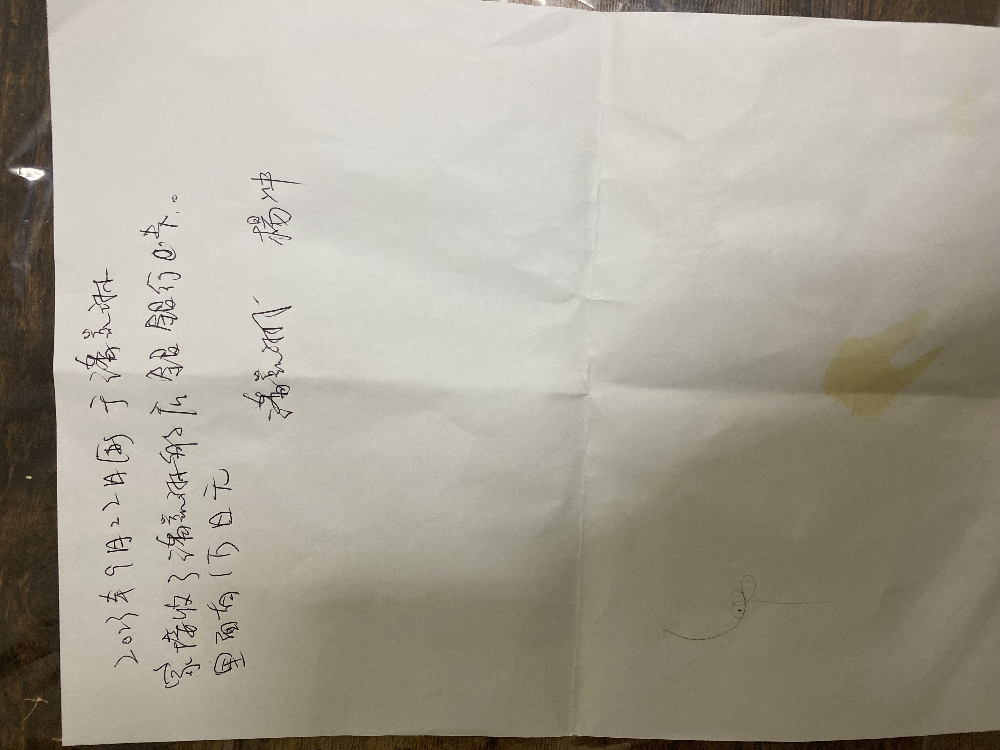
和他签订无聊的合同，后面还有很多。
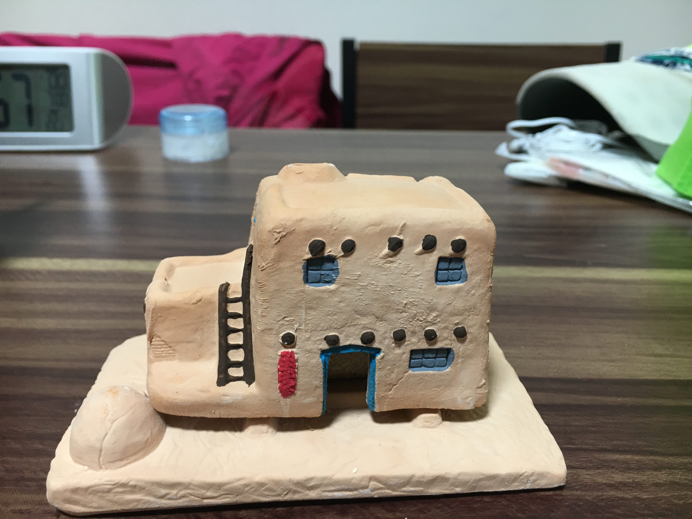
这是别人的回礼礼物，一个会议上认识的朋友。我刚去到日本那次遇到我送了东西给他，之后那次回这个礼。
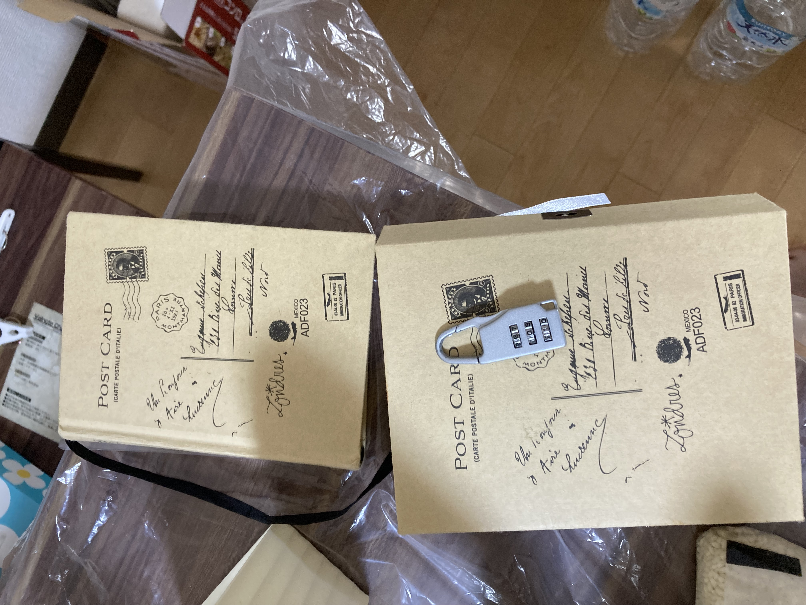
别人送的生日礼物，有所得日记。

2017年7月我和恩炅隔了13年重逢，她在车站等我时送给我的。


在东京开始首次见面的男士，很投缘，他买了很多东西回去给家人，送了我一个。

刚去东京时组里的秘书古谷女士送的见面礼。

和我很投缘的越南妹妹黄安。

她送了这些东西给我

送给我那天家里没吃的了，马上煮来吃，感受她的爱心。

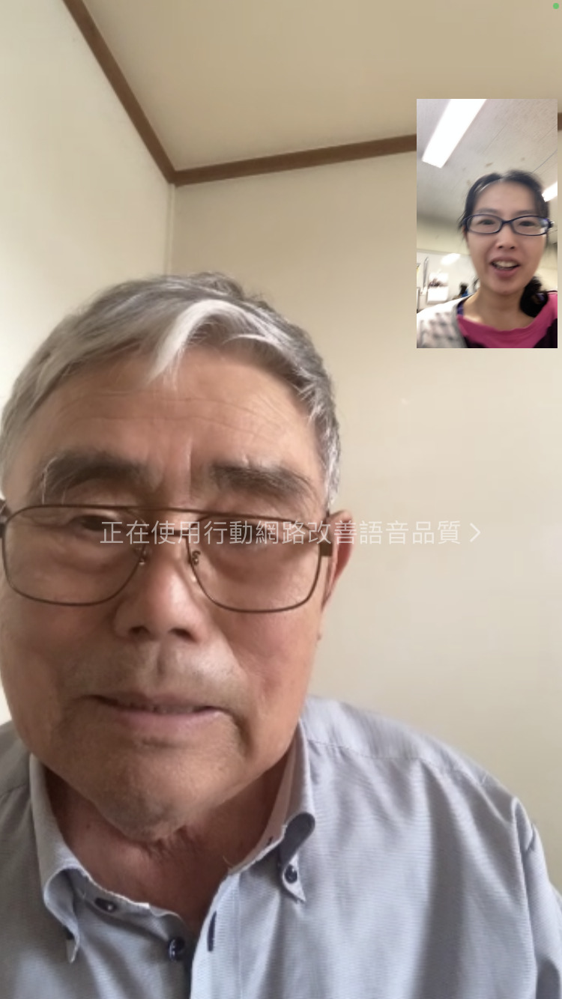
涉谷爷爷，来不及去探访他就要走了，只能视频。

吓着我的印度人。

挂在黄姐家门口的礼物，她留言给我说很惊喜。
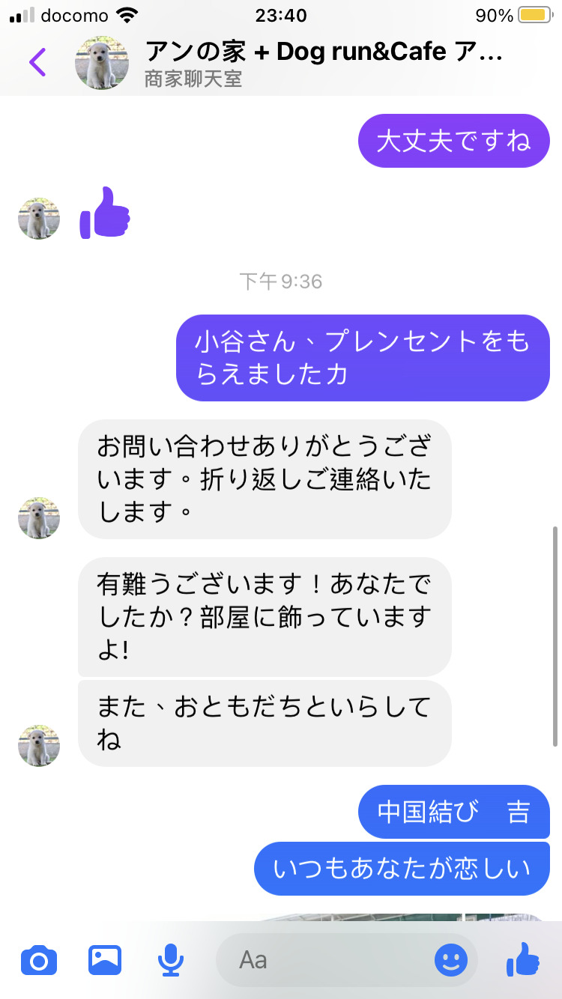
アンの時間的小谷女士。我寄礼物过去感谢她了，她还请我去她家里玩，不是咖啡店开门的日子也可以，很感动呢。
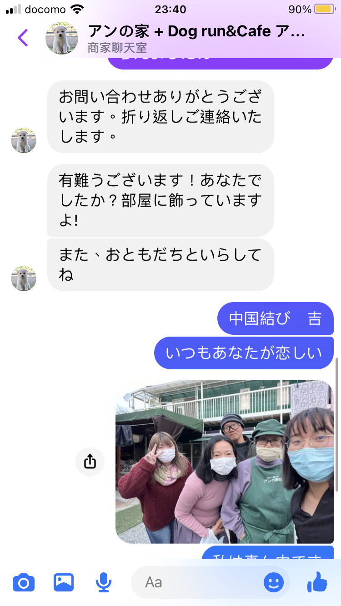
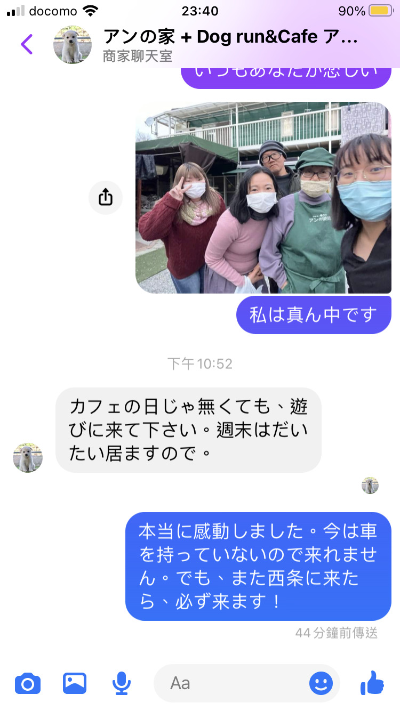
挂在黄姐家门口的礼物，她留言给我说很惊喜。
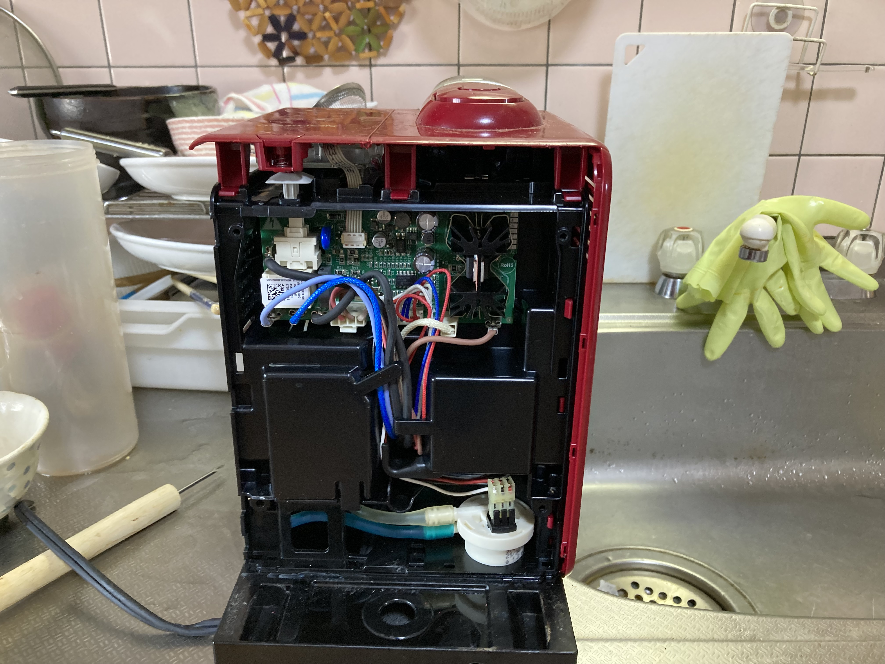
日本最麻烦是扔垃圾。大型的要自己放在收集站，而且冰箱不能扔，一定要给钱让专人回收。一般电器也不能放在垃圾桶，小型的可以拿去市役所。我的咖啡机不符合小型的定义，我就把它给拆，然后把里面的电池拿去回收，这拆的过程有点艰巨的。
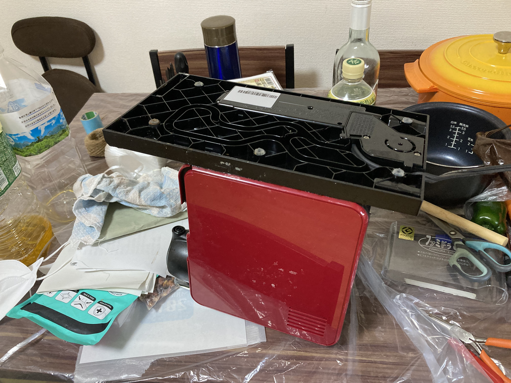
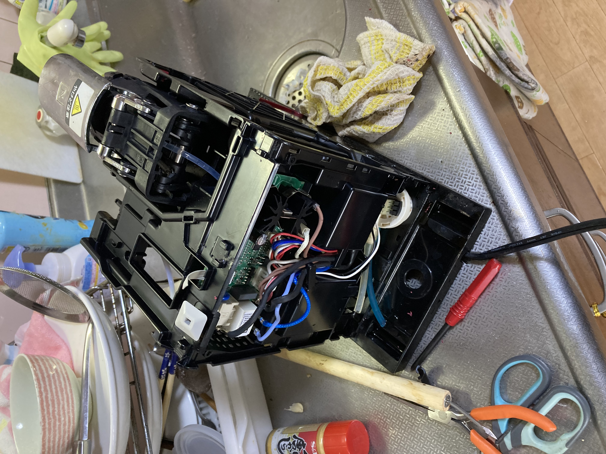
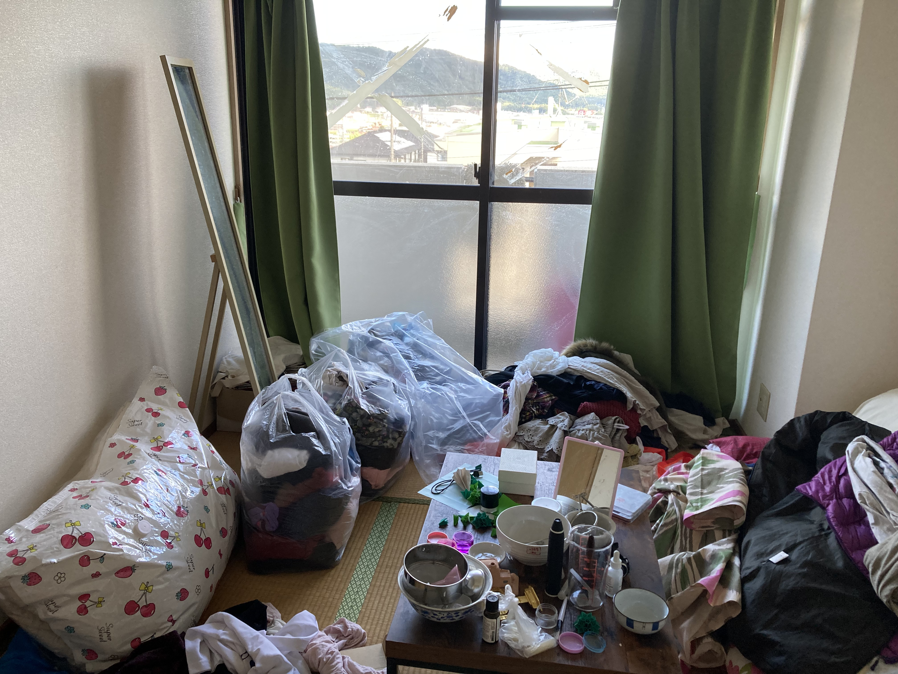
收拾东西时的凌乱。
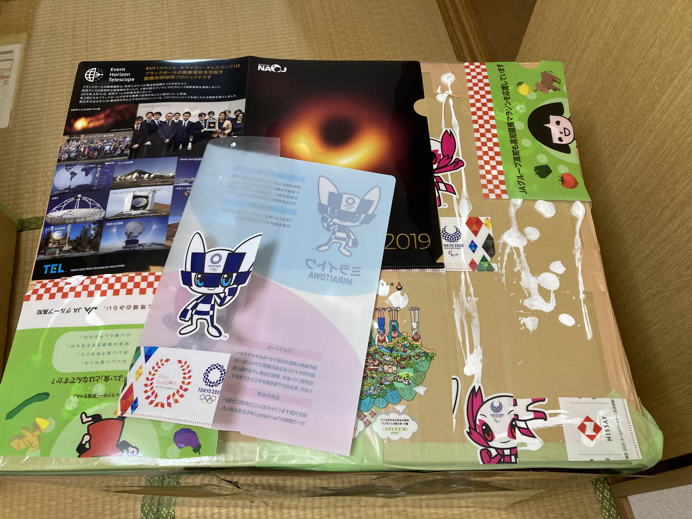
杨冲说我的箱子太薄，所以我加了防护。这些文件夹都是免费的，日本很多发。

箱子里面也要加固。我寄了5还是6箱，每箱最重30公斤，寄东西我记得寄了好几万（具体忘记），比起德国贵很多。

这张床我最舍不得，睡的特别舒服（也不是特别贵）。

这是东京带来的沙发穿及桌子。
这张沙发床不好打开，我怕买家不会打开，特别制作视频。

卖给人家的东西，虽然是贱卖，我都整理得很好。

打包卖给越南人的东西。

电扇很多灰，我擦干净了才给人。

越南人不会日语，我怕对方不会操作都写好翻译。这台洗衣机也就卖500。

这个洗衣机的管子也是很多灰，我也是擦干净才卖给人。

拆洗衣机时顺便看看怎样装洗衣机。
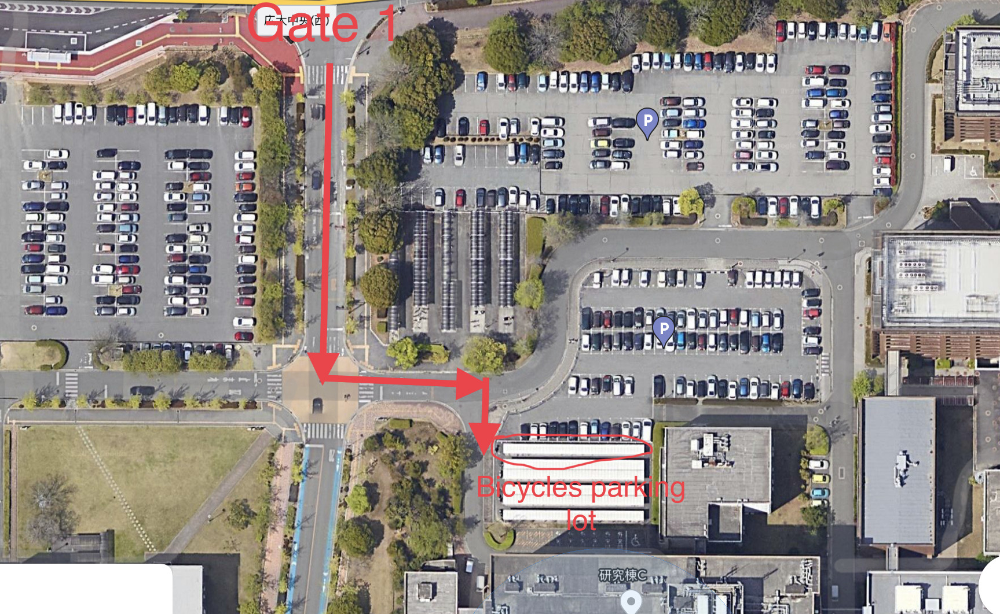
在学校卖东西我怕别人不好找还设计好地图。

纪念一下水费单，两个月一次的

纪念一下电费单，不开空调一般2000多。
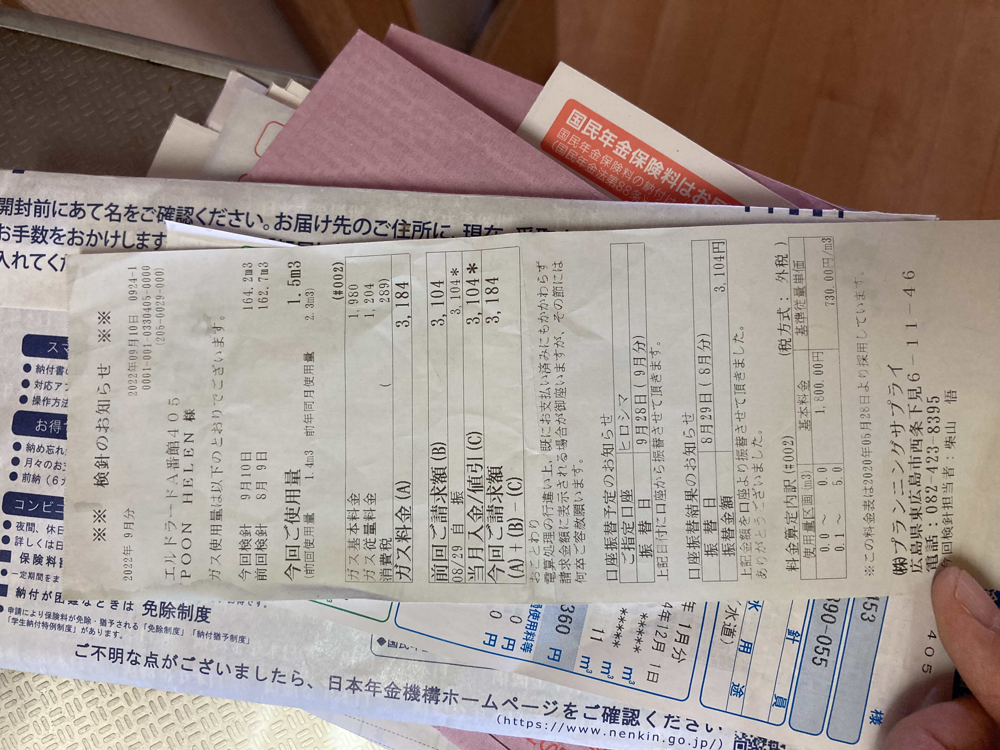
瓦斯冬天的时候可能五六千，我做饭用电磁炉的。

解约通知书

下一章